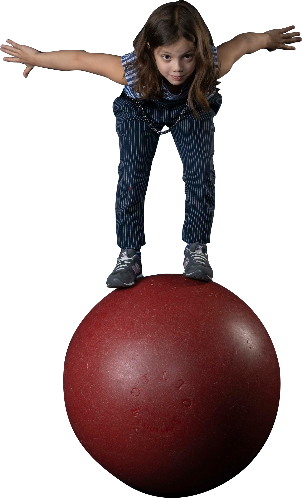
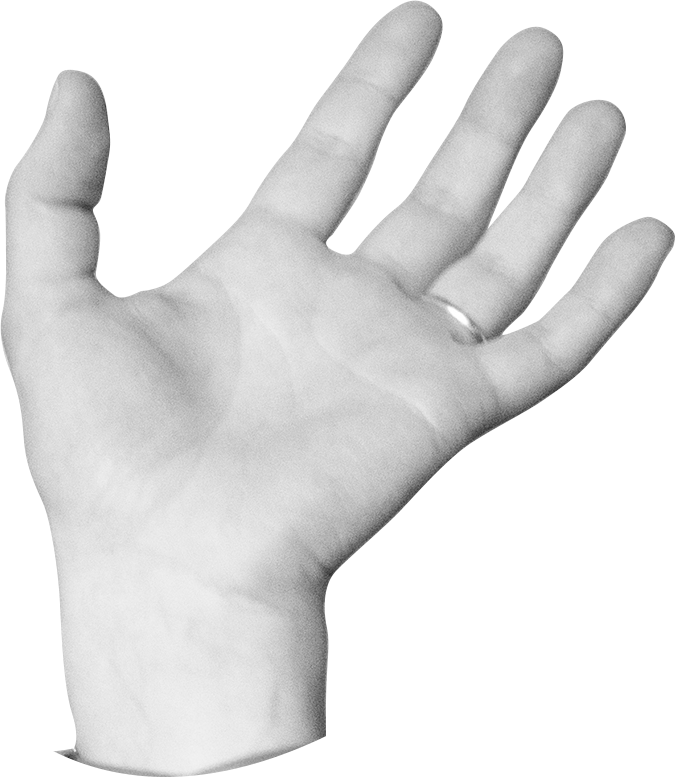

<section class="main-item ne-cirk__section height-200">
  <div class="container relative height-100">
    <div class="title__wrapper absolute">
      <div class="title title-main section__title">
        <div>
          <span>Тут вам</span>
        </div>

        <div class="italic">
          <span class="outline">не&nbsp;</span>
          <span>цирк</span>
        </div>
      </div>
      @include('./down-btn.html')
    </div>
  </div>

  <div class="ne-cirk-girl__wrapper fixed">
    <div class="ne-cirk-girl">
      
    </div>
  </div>

  <div class="ne-cirk-hand__wrapper fixed">
    <div class="ne-cirk-hand">
      
    </div>
  </div>
</section>
